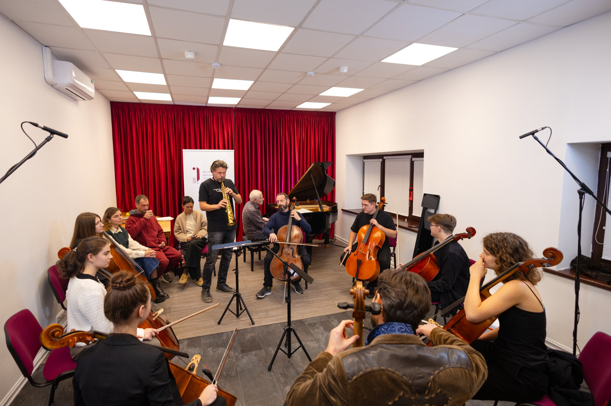
Закрытый репетиторий Виолончельной академии
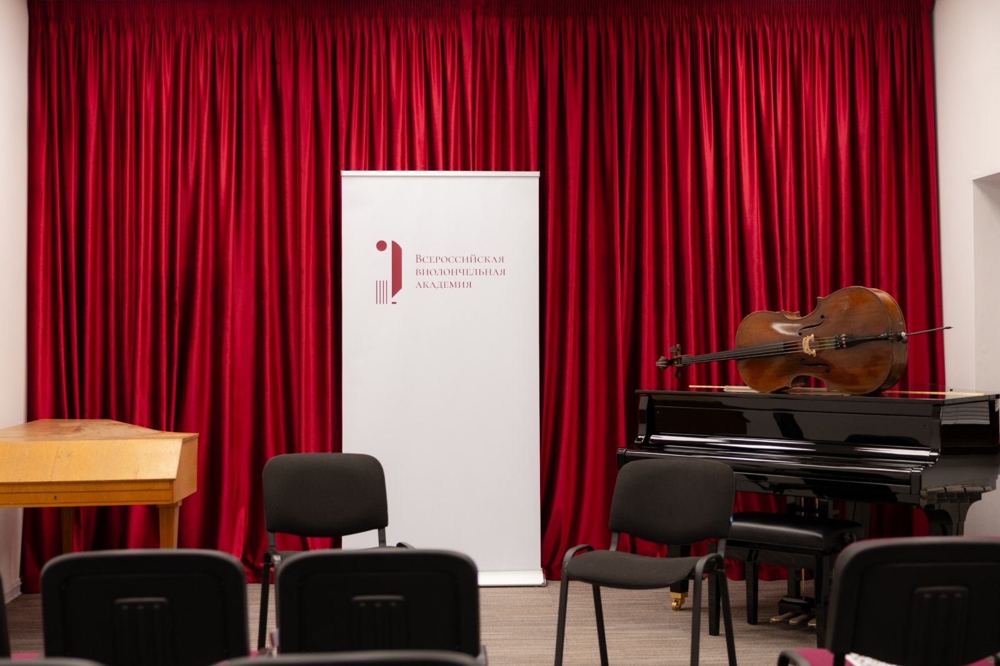
Закрытый репетиторий Виолончельной академии — пространство в центре Москвы для регулярных занятий, репетиций и профессионального общения. Здесь музыканты работают над репертуаром, готовятся к выступлениям, встречаются с коллегами и создают совместные проекты.
Репетиторий появился из двух потребностей: музыкантам было необходимо доступное место для полноценной работы, а Академии — собственное постоянное пространство. Сегодня он объединяет повседневную поддержку исполнителей и жизнь профессионального сообщества, для которого постепенно стал общим домом.
Пространство для работы
В репетитории расположены камерный зал Академии и три репетиционных класса — «Ростропович», «Шафран» и «Шаховская». Здесь можно заниматься самостоятельно, работать с концертмейстером, репетировать камерным составом или ансамблем виолончелей.
В каждом классе есть рояль или фортепиано Kawai, зеркало, пюпитры, стулья для занятий и диван для отдыха. Музыкантам доступны инструменты для работы на месте, метрономы и другие учебные принадлежности, а также камеры и микрофоны для записи.
Особое место занимает библиотека Академии: ноты виолончельных произведений, издания, привезённые из разных стран, книги и профессиональная литература. С материалами можно работать на месте, необходимые ноты — сканировать. В репетитории есть и свой «банк канифоли», которым могут пользоваться резиденты.
Пространство работает ежедневно с 10:00 до 22:00. В течение дня здесь дежурит администратор, а время для занятий музыканты выбирают через систему онлайн-бронирования.
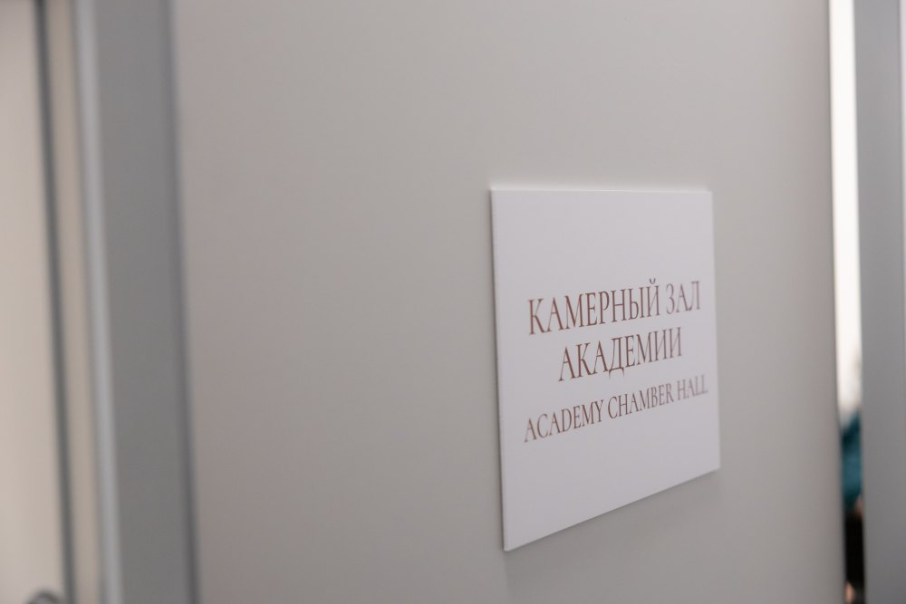
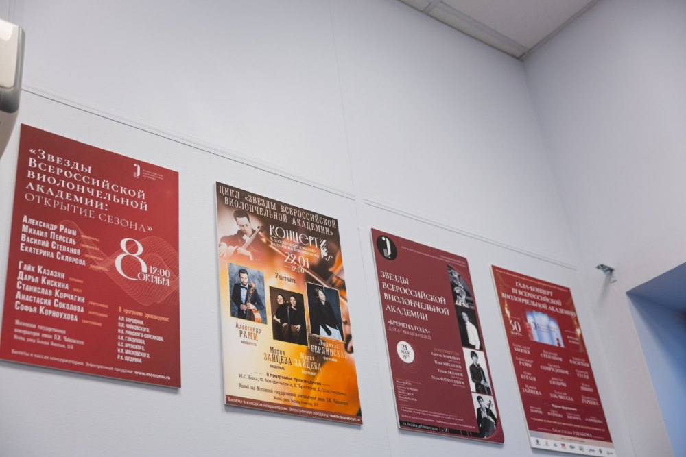
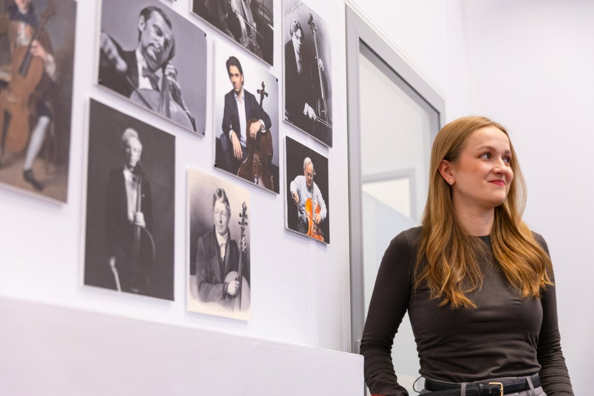
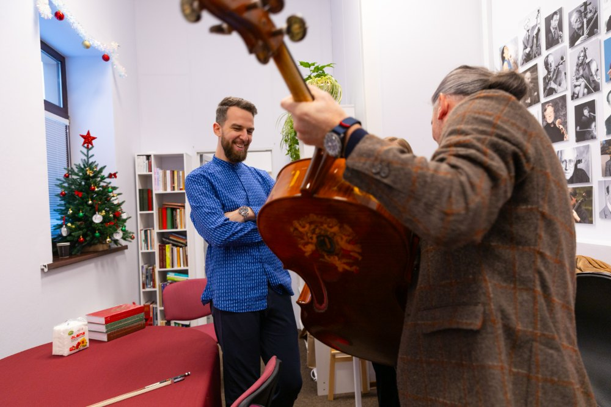
Место встречи музыкантов
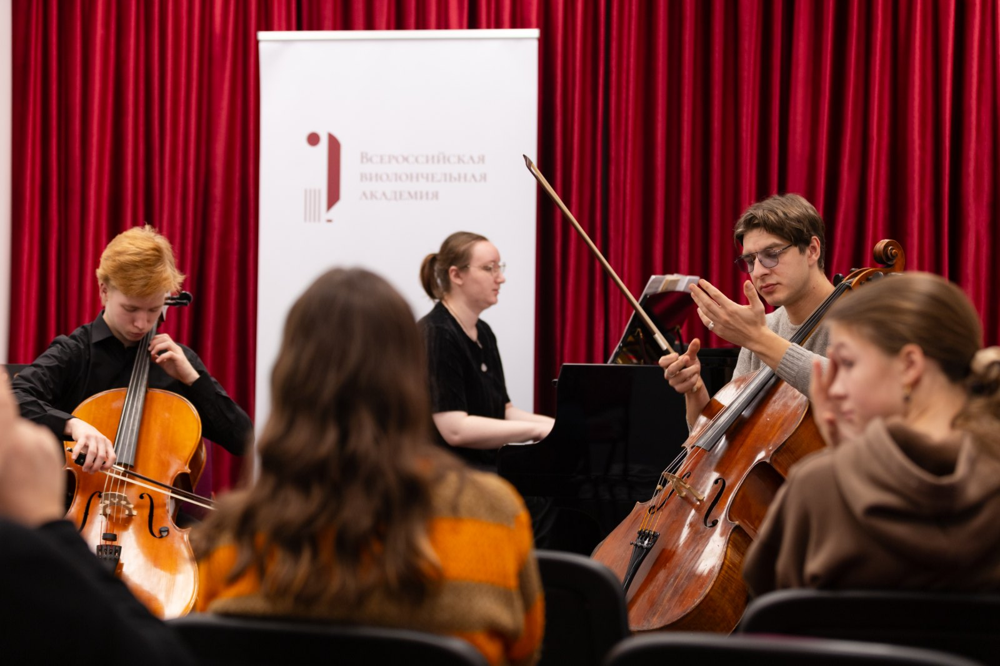
В репетитории занимаются и репетируют исполнители разных поколений — от молодых музыкантов до признанных артистов и педагогов. Виолончелисты встречаются здесь с пианистами, скрипачами, альтистами, исполнителями на духовых и других инструментах. Их объединяют совместная работа и связь с Академией.
Здесь готовят концертные программы, разучивают новые произведения, репетируют перед конкурсами и прослушиваниями. Между занятиями продолжается общение: музыканты знакомятся, обсуждают творческие идеи, находят партнёров для ансамблей и получают поддержку старших коллег.
Тёплая, домашняя атмосфера — важная часть жизни репетитория. В пространстве есть кухня и зона отдыха, где можно выпить чай или кофе, поесть и поговорить с коллегами между репетициями.
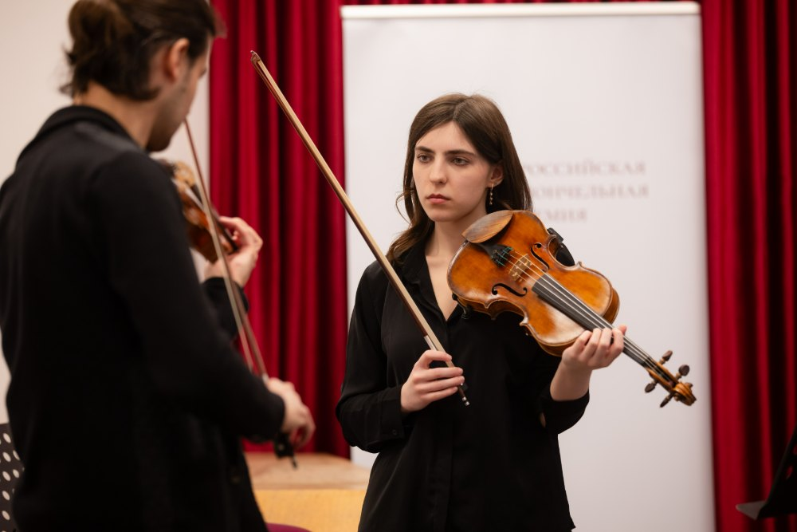
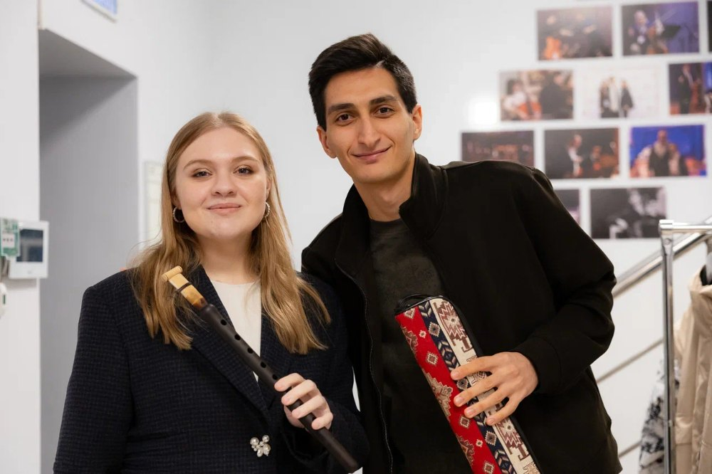
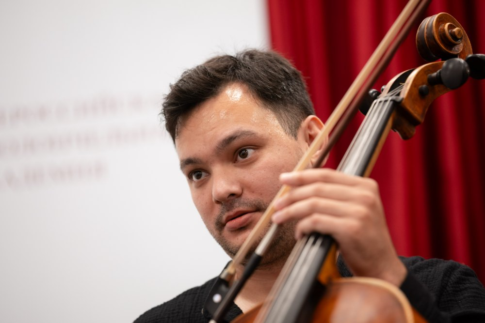
События и проекты
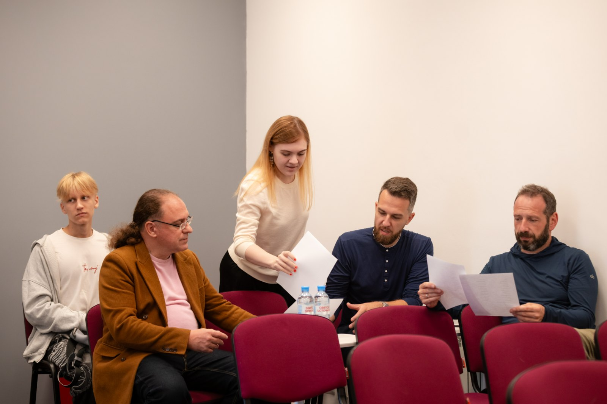
Репетиторий служит площадкой для части образовательных, концертных и медиапроектов Академии. Здесь проходят индивидуальные занятия, встречи в рамках постоянных программ, мастер-классы приглашённых педагогов, прослушивания и камерные концерты. Свои события проводят как Академия, так и её резиденты.
В этих же помещениях снимаются образовательные курсы, интервью и другие медиапроекты Академии. Пространство позволяет соединять ежедневную исполнительскую работу, обмен опытом и создание материалов для более широкой аудитории.
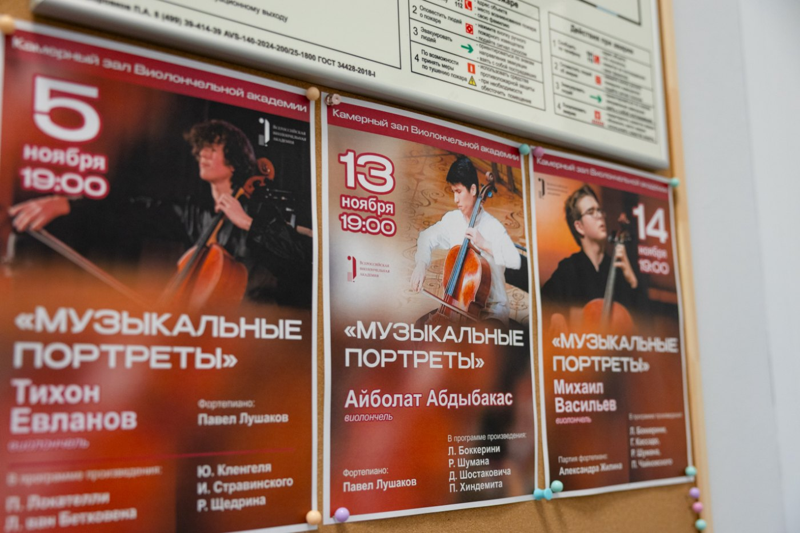
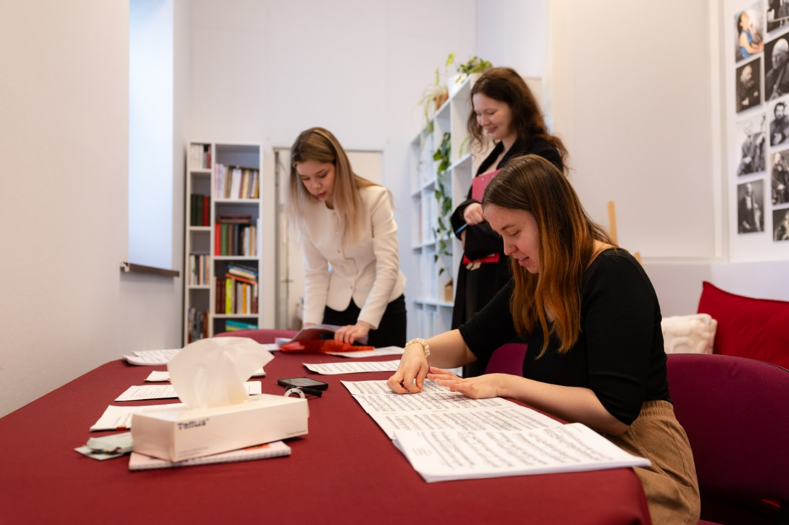
Резидентство и посещение
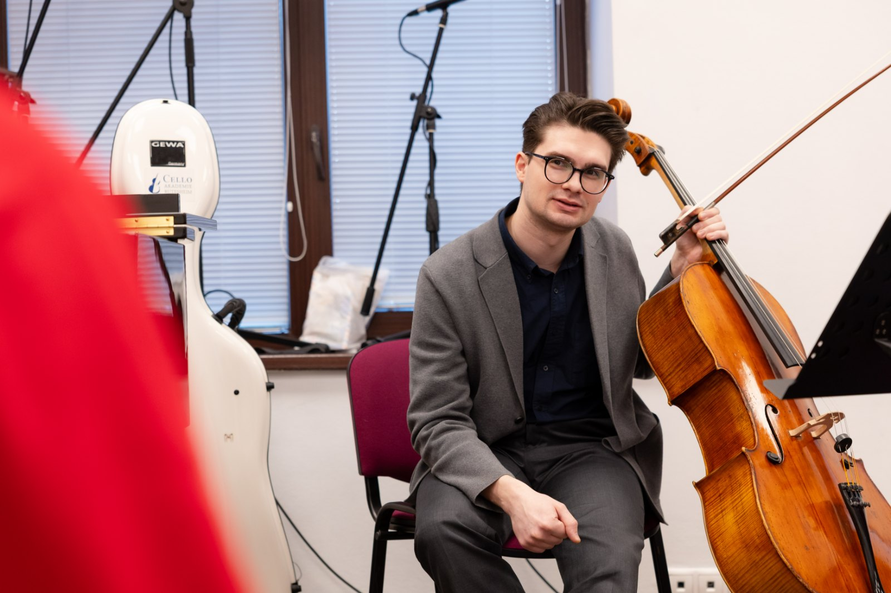
Постоянный доступ к репетиторию предоставляется резидентам по личному приглашению Академии. Круг резидентов формируется индивидуально: Академия приглашает музыкантов, связанных с её деятельностью, участников творческих и образовательных проектов, педагогов и постоянных коллег.
Пользование репетиторием для приглашённых музыкантов бесплатно. Занятия проходят по предварительному бронированию с учётом расписания и доступности помещений. Для совместных репетиций резиденты могут приглашать концертмейстеров и партнёров по ансамблю, заранее согласовав их посещение.
Закрытый формат позволяет сохранять камерный масштаб пространства и условия для регулярной работы. При этом открытые концерты, мастер-классы, прослушивания и другие события могут посещать все желающие по регистрации — в соответствии с условиями конкретного мероприятия.